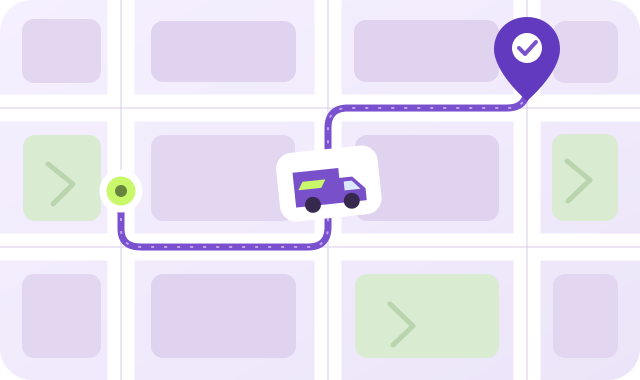

DO PONTO DE PARTIDA ATÉ VOCÊCada etapa,
Cada etapa,
mais perto de chegar.
Informe o código para consultar sua entrega. Por privacidade, o acompanhamento fica disponível para as contas envolvidas e a administração.

Todo caminho tem um próximo passo.
Digite o código da sua entrega para encontrar os horários, o histórico de status e a previsão disponível.
MAPA ILUSTRATIVO · SEM GPS EM TEMPO REAL